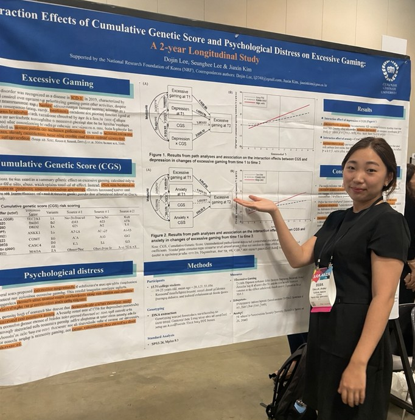

Understanding Behavior Day by Day
A 14-day intensive longitudinal study examining how day-to-day psychological experiences and individual vulnerability relate to next-day drinking behavior.
View research →I am interested in how psychological risk changes in everyday life and how timely, personalized interventions can respond to those changes. My work brings together longitudinal methods, digital approaches, and questions grounded in clinical practice.

I am especially interested in psychological processes that change across people, days, and moments.
How do emotion, sleep, behavior, and daily experiences signal meaningful changes in psychological risk?
What makes the same stressor, coping strategy, or intervention work differently across individuals and across moments?
How can digital tools extend psychological support beyond scheduled clinical encounters and into moments when it is needed?
Working in clinical settings has made one question difficult for me to ignore: what happens between appointments?
Psychological distress rarely follows a clinic schedule. Meaningful changes can unfold over hours or days, often outside the moments when clinicians are able to observe them. That gap increasingly shapes the questions I want to study.
Can we understand those changes earlier—and make support available when it matters most?
A 14-day intensive longitudinal study examining how day-to-day psychological experiences and individual vulnerability relate to next-day drinking behavior.
View research →Research examining whether core motivational interviewing processes can be translated into brief technology-mediated communication.
View research →Longitudinal research examining reciprocal associations among individual behavior and interpersonal processes across development.
View research →